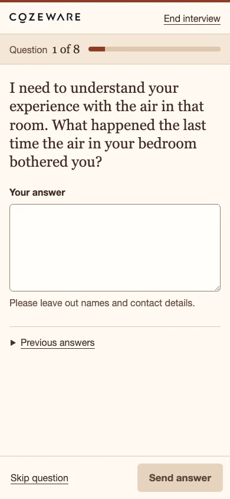
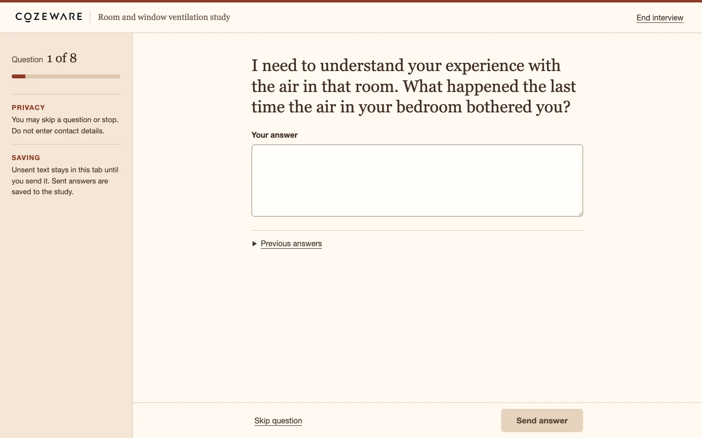
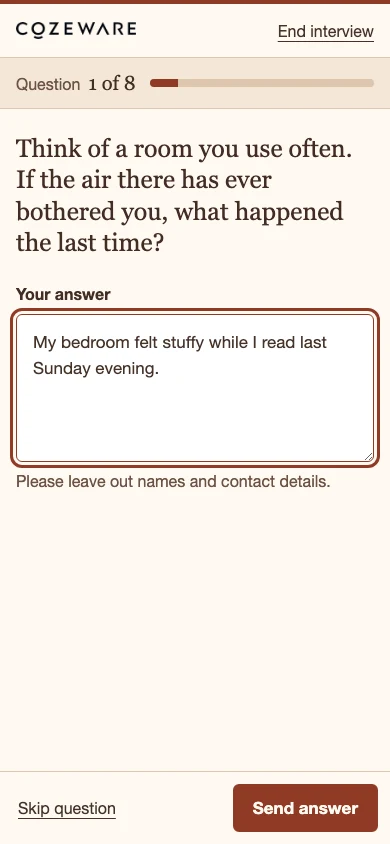

Cozeware FreshFlow AI 访谈AI Interview
八道题的在线访谈。AI 读完整段对话，决定是否追问、问什么，一次只问一句。
Skip question



解决的问题Problem
新风机预售前，需要知道用户最近一次房间空气问题怎么发生、怎么处理、窗户什么样。固定选项问卷只能得到选择题答案，原话和原因会丢失。
它能做什么What it does
先确认受访资格，再走八道题。AI 根据已有回答追问细节，服务器限定题目范围、追问次数和每次一问，用户随时可以跳过或结束。回答保存后可导出，带原话出处。
现在的用法In use
邀请制内部试填阶段，公网固定网址在线，自动自检。邀请链接不公开，正式招募前继续测试。
- 起步
- 2026-11-11内部试填完成于 2026-11-24
- 人员
- 1 位使用者加 AI 编程助手
- 规模
- 8 题 + 追问约 9 分钟完成
- 访谈方式
- AI 追问题目范围、追问次数由服务器限定